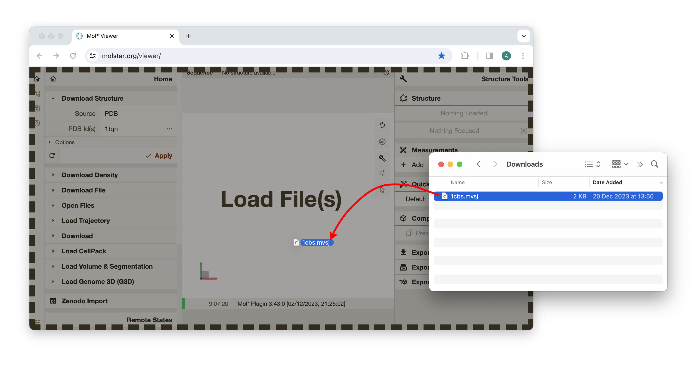
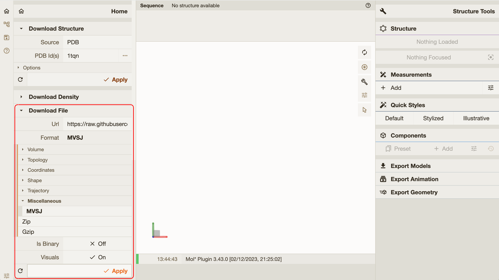

Mol* MVS Extension
Mol* MolViewSpec extension provides functionality for building, validating, and visualizing MVS views.
Graphical user interface
There are multiple ways to load MolViewSpec views (.mvsj/.mvsx) into Mol* Viewer:
-
Drag&drop support: The easiest way to load a MVS view into Mol* Viewer is to drag a
.mvsjor.mvsxfile and drop it in a browser window with Mol* Viewer.Test with these files: 1cbs.mvsj, 1h9t.mvsx

-
Load via menu: Another way to load a MVS view is to use "Download File" or "Open Files" action, available in the "Home" tab in the left panel. For these actions, the "Format" parameter must be set to "MVSJ" or "MVSX" (in the "Miscellaneous" category) or "Auto".
Test with this URL:
https://raw.githubusercontent.com/molstar/molstar/master/examples/mvs/1cbs.mvsj

-
URL parameters: Mol* Viewer supports
mvs-url,mvs-data, andmvs-formatURL parameters to specify a MVS view to be loaded when the viewer is initialized.mvs-urlspecifies the address from which the MVS view should be retrieved.mvs-dataspecifies the MVS view data directly. Keep in mind that some characters must be escaped to be used in the URL. Also beware that URLs longer than 2000 character may not work in all browsers. Because of these limitations, the preferred method it to host the data somewhere and usemvs-urlinstead.mvs-formatspecifies the format of the MVS view data frommvs-urlormvs-data. Allowed values aremvsjandmvsx(default ismvsj).
Examples of URL parameter usage:
Programming interface
Most functions for manipulation of MVS data (including parsing, encoding, validating, and building) are provided by the MVSData object (defined in src/extensions/mvs/mvs-data.ts). In TypeScript, MVSData is also the type for a MVS view.
The loadMVS function (defined in src/extensions/mvs/load.ts) can be used to load MVS view data into Mol* Viewer.
Example usage:
// Fetch a MVS, validate, and load
const response = await fetch('https://raw.githubusercontent.com/molstar/molstar/master/examples/mvs/1cbs.mvsj');
const rawData = await response.text();
const mvsData: MVSData = MVSData.fromMVSJ(rawData);
if (!MVSData.isValid(mvsData)) throw new Error(`Oh no: ${MVSData.validationIssues(mvsData)}`);
await loadMVS(this.plugin, mvsData, { replaceExisting: true });
console.log('Loaded this:', MVSData.toPrettyString(mvsData));
console.log('Loaded this:', MVSData.toMVSJ(mvsData));
// Build a MVS and load
const builder = MVSData.createBuilder();
const structure = builder.download({ url: 'https://www.ebi.ac.uk/pdbe/entry-files/download/1og2_updated.cif' }).parse({ format: 'mmcif' }).modelStructure();
structure.component({ selector: 'polymer' }).representation({ type: 'cartoon' });
structure.component({ selector: 'ligand' }).representation({ type: 'ball_and_stick' }).color({ color: '#aa55ff' });
const mvsData2: MVSData = builder.getState();
await loadMVS(this.plugin, mvsData2, { replaceExisting: false });
When using the pre-built Mol* plugin bundle, MVSData and loadMVS are exposed as molstar.PluginExtensions.mvs.MVSData and molstar.PluginExtensions.mvs.loadMVS. Furthermore, the molstar.Viewer class has loadMvsFromUrl and loadMvsData methods, providing the same functionality as mvs-url and mvs-data URL parameters.
See MolViewSpec extension in Mol* - Integration in web pages for a demonstration.
Command-line utilities
The MVS extension in Mol* provides a few command-line utilities, which can be executed via NodeJS:
mvs-validateprovides validation of MolViewSpec filesmvs-rendercreates images based on MolViewSpec filesmvs-print-schemaprints MolViewSpec tree schema (i.e. currently supported node types and their parameters)
Example usage:
# Clone Mol* repo, install, and build
git clone https://github.com/molstar/molstar.git
cd molstar/
npm install && npm run build
# Validate a MolViewSpec file `examples/mvs/1cbs.mvsj`
node lib/commonjs/cli/mvs/mvs-validate.js examples/mvs/1cbs.mvsj
# Render a MolViewSpec file `examples/mvs/1cbs.mvsj` to `../outputs/1cbs.png`
node lib/commonjs/cli/mvs/mvs-render.js -i examples/mvs/1cbs.mvsj -o ../outputs/1cbs.png --size 800x600 --molj
# Print MolViewSpec tree schema formatted as markdown
node lib/commonjs/cli/mvs/mvs-print-schema.js --markdown
(An alternative to cloning the GitHub repository is to install Mol* package from npm by npm install molstar canvas gl jpeg-js pngjs. Then you can type npx mvs-validate ... instead of node lib/commonjs/cli/mvs/mvs-validate.js ...)